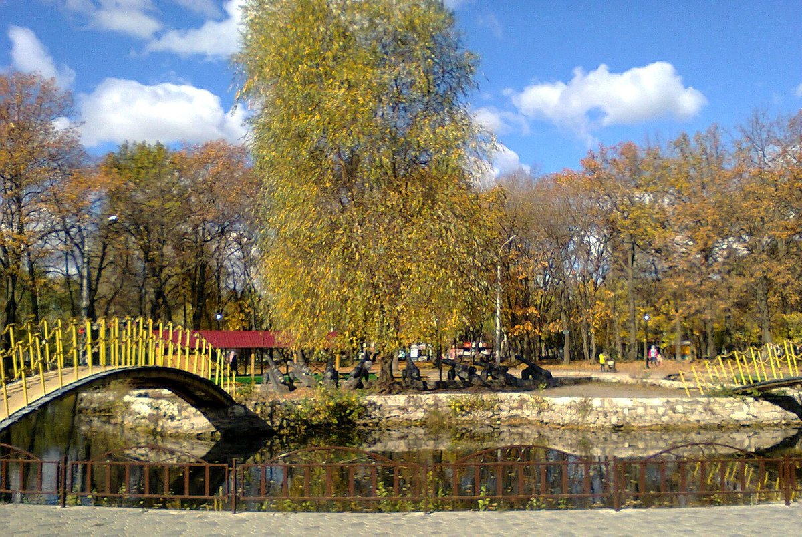

Струковский сад – чудесное место в историческом центре Самары. Всегда приятно неторопливо бродить по его аллеям. Особенно романтично здесь в конце сентября, когда деревья становятся разноцветными, а под ногами шуршит опавшая листва…:) Если заходить в парк с центрального входа, то первым Вас встретит симпатичный фонтан, в центре которого две детские фигурки с зонтиком. От этого места расходятся аллеи по Струковскому саду. Схема его находится справа от фонтана. Стоит отметить, что совсем недавно на противоположном краю парка, который в советский период носил имя Максима Горького, появился замечательный памятник. Он установлен недалеко от входа со стороны Волги и посвящён знаменитому вальсу Ильи Шатрова «На сопках Маньчжурии». Это музыкальное произведение как известно, впервые было исполнено в 1907-м году именно в Струковском саду Самары. Вообще, надо сказать, парк заметно похорошел после 2018-го года. Подготовка к футбольному ЧМ явно пошла этому городскому пространству на пользу!..:)
Парк культуры и отдыха имени Юрия Гагарина в Промышленном районе Самары открыт в 1976г. На месте парка в 1930—1940-е годы находились посёлок Барбыш и дачи сотрудников НКВД. В этих местах производились захоронения расстрелянных граждан, в том числе высокопоставленных офицеров.
